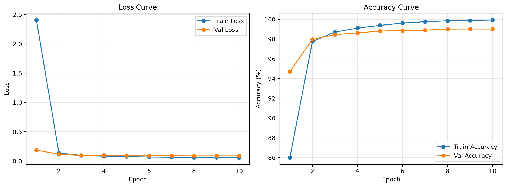

深度伪造检测实践记录
本文是 NIS3363 机器学习课程的课程大作业实践报告，实验内容为深度伪造检测相关的实践操作。
任务目标
本作业面向深度伪造检测任务，输入为人脸彩色图像，输出为二分类结果：真实图像记为 Real，标签为 1；伪造图像记为 Fake，标签为 0。根据作业要求，我分别实现了传统机器学习方法和深度学习方法，并完成训练、验证、测试、结果保存与分析。模型效果使用 Accuracy、F1 score 和 AUC 三项指标进行评价。
从工程实现角度看，本项目不仅需要得到最终分类结果，还需要覆盖完整实验流程，包括数据集解析、训练集与验证集划分、模型训练、测试评估、实验结果持久化以及训练曲线可视化。因此，本报告的重点不仅在于“选用了什么模型”，也在于“这些模型是如何被组织成可复现、可比较的实验流程”。
具体内容
整体流程
整个项目的执行流程可以概括为以下五个步骤。
- 通过
code/common.py解析数据集目录，识别train / validation / test三类划分以及fake / real两类标签。代码支持大小写不同的目录别名，例如Train、Validation、Test。 - 若数据集本身存在显式验证集，则直接使用；若不存在，则从训练集内部按给定比例随机划分验证集。当前课程提供的原始数据集在实际实验中采用的是第二种方式，截取自
Kaggle 上的
deepfake and real images数据集。 deepfake and real images - 分别执行传统机器学习训练脚本
train1.py与深度学习训练脚本train2.py。两类方法的训练结果都会写入outputs/<output-name>/目录。 - 使用
test1.py与test2.py在测试集上评估保存好的模型，并将测试指标写入对应输出目录中的test.json。 - 对 ViT 训练过程，额外使用
plot_train_metrics.py或train2.py内部绘图逻辑生成训练曲线图，用于辅助分析模型收敛过程。
因此，本项目并不是单纯调用现成模型得到分数，而是实现了从原始图像到最终实验记录的完整闭环。传统方法和深度学习方法共享数据集解析逻辑，但在特征表示、训练方式和推理策略上存在明显差异，这也构成了后续对比分析的基础。
实施方案
传统机器学习方法
传统方法的核心思想是先构造可解释的手工特征，再用线性分类器完成真假判别。相较于最初只使用灰度 HOG 的方案，当前实现对特征做了增强，将单张图像表示为以下三部分的拼接结果。
- 灰度 HOG 特征，用于刻画局部边缘、纹理方向和轮廓结构。
- LBP 纹理直方图，用于补充更细粒度的局部微纹理模式。
- RGB 三通道的均值与标准差，用于描述整体颜色统计信息。
之所以采用这种组合，是因为深伪图像的异常通常不仅体现为边缘扭曲，也可能表现为肤色分布不自然、局部纹理不一致或压缩痕迹异常。单一 HOG 虽然可解释性较好，但信息维度相对单薄，而 HOG + LBP + 颜色统计的组合能够在不引入复杂深模型的前提下提升表征能力。
在分类器选择上，项目使用 StandardScaler + LinearSVC
构成训练流水线。这样做有两个原因。第一，手工特征不同维度的取值范围不一致，标准化有助于稳定线性分类器的训练过程；第二，线性
SVM
在中等规模特征空间中训练速度较快，作为课程作业中的传统基线具有代表性。训练脚本先在训练子集上拟合、在验证子集上评估，随后再将训练集与验证集合并，重新拟合最终模型并保存，以便测试脚本直接加载。
深度学习方法
深度学习部分采用 Vision Transformer，参考了 MuqadasEjaz
的相关研究，具体为 timm 提供的
vit_base_patch16_224
骨干网络，并在其后接入自定义二分类头。
与从头训练卷积网络相比，该方案具有两个明显优势：一是预训练主干具备更强的通用视觉表征能力，二是 Transformer 结构在处理局部纹理与全局空间关系时更灵活，更适合深伪检测这类既依赖局部瑕疵又依赖整体一致性的任务。
当前实现中的深度学习方案包括以下关键设计。
- 输入分辨率固定为
224×224，使用标准 ImageNet 均值和方差进行归一化。 - 训练阶段通过 Albumentations 进行数据增强，包括水平翻转、轻微旋转、亮度/对比度扰动、轻微模糊和 JPEG 压缩扰动。
- 分类头由
LayerNorm + Dropout + Linear + GELU + LayerNorm + Dropout + Linear构成，比直接接一个线性层更有表达能力。 - 损失函数使用带类别权重和 label smoothing 的交叉熵，以缓解类别不均衡与过拟合风险。
- 优化器使用 AdamW，骨干网络和分类头分别设置不同学习率。
- 学习率调度采用 warmup + cosine 退火。
- 若检测到 CUDA，则自动启用 AMP 混合精度；若没有 GPU，则自动回退到 CPU 训练。
- 测试阶段默认启用水平翻转 TTA，并将原图预测与翻转图预测取平均，以提升稳定性。
需要说明的是，本项目虽然使用了公开预训练权重，但模型的数据读取、增强、分类头设计、训练循环、验证逻辑、测试逻辑、结果保存和曲线绘制均为自主实现，因此仍符合“模型设计、训练、测试流程需自主实现，可参考公开技术资料”的要求。
核心代码分析
在分析具体模型之前，有必要先说明项目整体代码组织方式。code/common.py
负责公共组件，包括：
- 数据集目录解析与大小写别名兼容。
- 训练集/验证集的构建逻辑。
- 传统特征提取。
- 统一的指标计算与 JSON 保存。
- 输出目录命名约定。
也就是说，两条实验路线虽然模型不同，但共享了同一套数据解析与结果落盘逻辑，保证了实验流程的一致性和可比较性。
传统方法核心代码分析
传统方法的关键实现集中在 common.py 与
train1.py。下面这段代码体现了手工特征的核心构造方式：
1
2
3
4
5
6
7
8
9
10
11
12
13
14
15
16
17
18
def extract_hog_feature(path: Path, image_size: int = 96) -> np.ndarray:
rgb = load_rgb_image(path, image_size=image_size)
gray = np.dot(rgb[..., :3], np.array([0.2989, 0.5870, 0.1140], dtype=np.float32))
hog_feature = hog(
gray,
orientations=9,
pixels_per_cell=(8, 8),
cells_per_block=(2, 2),
block_norm="L2-Hys",
transform_sqrt=True,
feature_vector=True,
).astype(np.float32)
lbp = local_binary_pattern((gray * 255.0).astype(np.uint8), P=16, R=2, method="uniform")
lbp_hist, _ = np.histogram(lbp.ravel(), bins=np.arange(0, 19), range=(0, 18), density=True)
color_stats = np.concatenate([rgb.mean(axis=(0, 1)), rgb.std(axis=(0, 1))], dtype=np.float32)
return np.concatenate([hog_feature, lbp_hist.astype(np.float32), color_stats.astype(np.float32)])这段实现与报告前文中的设计完全一致：先将图像统一缩放，再构造 HOG、LBP
和颜色统计特征，最后拼接成单个向量。当前默认
image_size=96，结合 9 个方向、8×8
cell 与 2×2
block，可得到较高维度但仍可管理的手工特征表示。
在训练环节，train1.py 中的核心分类器定义如下：
1
2
3
4
5
6
pipeline = Pipeline(
[
("scaler", StandardScaler()),
("classifier", LinearSVC(C=args.svm_c, class_weight="balanced", dual="auto", random_state=42)),
]
)这里的 StandardScaler
负责标准化特征，LinearSVC
则完成线性判别。class_weight="balanced"
可以在类别样本略有不均衡时自动调整类别权重。训练脚本会先在训练子集上拟合模型、在验证子集上计算指标，再将训练集与验证集合并，重新拟合最终模型并保存到
outputs/hog_svm/
或指定输出目录下。这种“先验证、后全量重训”的流程，是传统方法中较常见的工程化写法。
深度学习方法核心代码分析
深度学习实现主要集中在
train2.py。从整体流程上看，它包含数据增强、模型定义、训练循环、验证逻辑、最佳
checkpoint 保存以及训练曲线绘制几个部分。
首先是模型结构定义：
1
2
3
4
5
6
7
8
9
10
11
12
13
self.backbone = timm.create_model(
model_name, pretrained=pretrained, num_classes=0, global_pool="token"
)
feature_dim = self.backbone.num_features
self.head = nn.Sequential(
nn.LayerNorm(feature_dim),
nn.Dropout(p=dropout),
nn.Linear(feature_dim, 512),
nn.GELU(),
nn.LayerNorm(512),
nn.Dropout(p=dropout * 0.67),
nn.Linear(512, num_classes),
)这里先通过 timm.create_model 建立
vit_base_patch16_224
主干，并移除默认分类头；随后再接入自定义二分类
head。相比直接使用线性头，这种两层结构更适合将预训练特征映射到当前任务空间。
其次是训练阶段的增强策略：
1
2
3
4
5
6
7
8
9
10
11
12
A.Compose(
[
A.Resize(image_size, image_size),
A.HorizontalFlip(p=0.5),
A.Rotate(limit=8, p=0.25),
A.RandomBrightnessContrast(brightness_limit=0.15, contrast_limit=0.15, p=0.3),
A.GaussianBlur(blur_limit=(3, 5), p=0.1),
A.ImageCompression(quality_lower=75, quality_upper=100, p=0.25),
A.Normalize(mean=IMAGENET_MEAN, std=IMAGENET_STD),
ToTensorV2(),
]
)这部分实现说明深度学习模型并不是简单地“把图片丢给 ViT”，而是显式模拟了深伪检测任务中常见的扰动来源，例如压缩、模糊和亮度变化。这些增强对于提升模型鲁棒性和泛化能力具有实际意义。
最后是训练循环中的关键优化设置。train2.py
中使用了类别权重、AdamW、warmup + cosine 调度、梯度裁剪以及
AMP。并且，脚本只会在验证准确率提升时保存 checkpoint，因此当前保存下来的
outputs/vit/model.pt 对应的是“最佳验证模型”，而不是最后一个
epoch
的模型。这一点也解释了为什么训练轮数较少时，最佳模型往往不出现在最后一轮。
测试结果与分析
结果来源说明
使用 deep_face/
数据集进行训练和测试，得到的报告对应文件如下：
- 传统方法训练结果：
outputs/hog_svm/train.json - 传统方法测试结果：
outputs/hog_svm/test.json - 深度学习方法测试结果：
outputs/vit/test.json - 深度学习训练过程记录：
outputs/vit/train.json
定量结果
在 deep_face/test/ 测试集上的最终结果如下表所示。
| 方法 | Accuracy | F1 | AUC |
|---|---|---|---|
| HOG + LBP + Color + LinearSVC | 68.05% | 67.18% | 0.7472 |
| ViT-B/16 + 自定义分类头 | 94.87% | 94.64% | 0.9877 |
从表中可以看到，深度学习的 ViT
方法在三项指标上都显著优于传统方法，尤其是 AUC 从 0.7472
提升到了
0.9877，说明深度学习模型对真假图像的排序能力明显更强。
训练过程分析
根据 outputs/vit/train.json，ViT 模型当前实验共训练了 10
个 epoch，其中：
- 最佳验证准确率为
99.02%，随对应epoch 为第9轮 - 第 1 轮训练准确率为
86.00%，验证准确率已达到94.71% - 第 4 轮训练准确率为
99.10%，验证准确率已达到98.61% - 第 10 轮训练准确率达到
99.92%，验证准确率为99.01%
这说明模型在前两到三轮内已经完成了主要的任务适配，之后进入性能平台期。从学习率记录可见，分类头学习率在 warmup 后逐渐下降，训练过程整体平稳，没有出现明显发散现象。验证准确率在第 9 轮达到最高，而第 10 轮略有波动，这也是脚本保存“最佳验证模型”而不是“最后一轮模型”的原因。

从训练曲线来看，训练损失与验证损失都在前几轮快速下降，训练准确率和验证准确率同步上升，说明当前优化策略能够较快收敛。虽然训练集准确率高于验证集准确率，但两者差距并未异常扩大，而是保持在一个合理的范围内，因此判断不存在非常严重的过拟合。
方法差异分析
传统方法与深度学习方法之间的性能差异，主要来自以下几个方面。
第一，特征表达能力不同。传统方法依赖人工设计的 HOG、LBP 与颜色统计特征，这些特征在一定程度上能反映局部纹理和整体颜色分布，但表达能力仍然有限，难以完整描述深伪图像中的复杂细节。相比之下，ViT 可以在端到端训练中自动学习更高层次、更任务相关的表征。
第二，空间建模能力不同。手工特征通常以局部统计为主，缺乏跨区域的信息整合能力；而 ViT 通过 patch token 与全局注意力机制，能够同时利用局部纹理和整体结构线索，这对人脸深伪检测尤其重要。
第三，训练策略不同。深度学习方法引入了预训练初始化、增强策略、类别权重、label smoothing、学习率调度、TTA 等工程机制，而传统方法的训练流程相对简单。两类方法在工程复杂度上存在明显差异，这也是性能差异的重要来源。
当然，传统方法也并非没有价值。它的优点在于实现简单、可解释性较强、推理成本低。在资源极其有限或需要快速构造基线时，手工特征方法仍然有实际意义。但从本次作业的实验结果来看，对于深伪检测这种高复杂度视觉任务，深度学习方法显然更具优势。
工作总结
收获与体会
本次作业让我较完整地经历了两类图像分类技术路线的实现过程。传统机器学习部分强化了我对“特征设计”这一问题的理解：当模型本身表达能力有限时，特征工程往往直接决定了结果上限。深度学习部分则进一步说明，在复杂视觉任务中，数据增强策略、预训练骨干、优化器选择和推理策略往往与模型结构本身同样重要。
另外，从工程实践角度看，本次作业也让我意识到“能跑通一个模型”和“能形成可复现实验流程”并不是一回事。只有把路径约定、数据划分、结果保存、曲线绘制和测试输出都统一起来，实验结果才真正具有可追踪性和可比较性。
遇到的问题与解决思路
在传统方法部分，单独使用灰度 HOG 时效果不理想，因此我进一步加入了 LBP 与颜色统计特征，以增强对伪造纹理和颜色异常的刻画能力。虽然这种增强不足以追平深度学习模型，但确实提升了传统基线的完整性。
在深度学习部分，较大的模型和较长的训练时间带来了实验管理问题。为避免重复训练，我额外提供了独立的曲线绘图脚本，可以直接读取训练阶段保存的 JSON 结果并重建曲线图。这使得结果分析与模型训练过程解耦，也让实验记录更加规范。